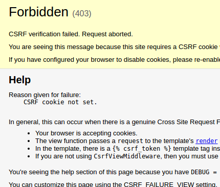
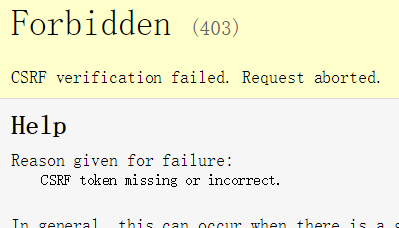
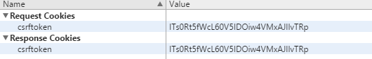

csrf
- 全称Cross Site Request Forgery，跨站请求伪造
- 某些恶意网站上包含链接、表单按钮或者JavaScript，它们会利用登录过的用户在浏览器中的认证信息试图在你的网站上完成某些操作，这就是跨站攻击
- 演示csrf如下
- 创建视图csrf1用于展示表单，csrf2用于接收post请求
def csrf1(request):
return render(request,'booktest/csrf1.html')
def csrf2(request):
uname=request.POST['uname']
return render(request,'booktest/csrf2.html',{'uname':uname})
- 配置url
url(r'^csrf1/$', views.csrf1),
url(r'^csrf2/$', views.csrf2),
- 创建模板csrf1.html用于展示表单
<html>
<head>
<title>Title</title>
</head>
<body>
<form method="post" action="/crsf2/">
<input name="uname"><br>
<input type="submit" value="提交"/>
</form>
</body>
</html>
- 创建模板csrf2用于展示接收的结果
<html>
<head>
<title>Title</title>
</head>
<body>
{{ uname }}
</body>
</html>
- 在浏览器中访问，查看效果，报错如下：

- 将settings.py中的中间件代码'django.middleware.csrf.CsrfViewMiddleware'注释
- 查看csrf1的源代码，复制，在自己的网站内建一个html文件，粘贴源码，访问查看效果
防csrf的使用
- 在django的模板中，提供了防止跨站攻击的方法，使用步骤如下：
- step1：在settings.py中启用'django.middleware.csrf.CsrfViewMiddleware'中间件，此项在创建项目时，默认被启用
- step2：在csrf1.html中添加标签
<form>
{% csrf_token %}
...
</form>
- step3：测试刚才的两个请求，发现跨站的请求被拒绝了，效果如下图

取消保护
- 如果某些视图不需要保护，可以使用装饰器csrf_exempt，模板中也不需要写标签，修改csrf2的视图如下
from django.views.decorators.csrf import csrf_exempt
@csrf_exempt
def csrf2(request):
uname=request.POST['uname']
return render(request,'booktest/csrf2.html',{'uname':uname})
- 运行上面的两个请求，发现都可以请求
保护原理
- 加入标签后，可以查看源代码，发现多了如下代码
<input type='hidden' name='csrfmiddlewaretoken' value='nGjAB3Md9ZSb4NmG1sXDolPmh3bR2g59' />
- 在浏览器的调试工具中，通过network标签可以查看cookie信息
- 本站中自动添加了cookie信息，如下图

- 查看跨站的信息，并没有cookie信息，即使加入上面的隐藏域代码，发现又可以访问了
- 结论：django的csrf不是完全的安全
- 当提交请求时，中间件'django.middleware.csrf.CsrfViewMiddleware'会对提交的cookie及隐藏域的内容进行验证，如果失败则返回403错误